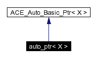
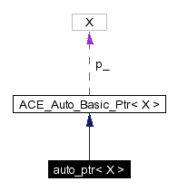

Main Page
Class Hierarchy
Alphabetical List
Compound List
File List
Compound Members
File Members
Related Pages
auto_ptr Class Template Reference
Implements the draft C++ standard auto_ptr abstraction.
More...
#include <Auto_Ptr.h>
Inheritance diagram for auto_ptr:

[
legend
]
Collaboration diagram for auto_ptr:

[
legend
]
List of all members.
Public Methods
ACE_EXPLICIT
auto_ptr
(X *p=0)
X *
operator->
() const
Detailed Description
template<class X>
class auto_ptr< X >
Implements the draft C++ standard auto_ptr abstraction.
Constructor & Destructor Documentation
template<class X>
ACE_EXPLICIT auto_ptr< X >::auto_ptr
(
X *
p
= 0
)
[inline]
Member Function Documentation
template<class X>
ACE_INLINE X * auto_ptr< X >::operator->
(
)
const
The documentation for this class was generated from the following files:
Auto_Ptr.h
Auto_Ptr.i
Generated on Wed Jan 15 19:17:21 2003 for ACE by
1.2.13.1 written by
Dimitri van Heesch
, © 1997-2001
 1.2.13.1 written by Dimitri van Heesch,
© 1997-2001
1.2.13.1 written by Dimitri van Heesch,
© 1997-2001